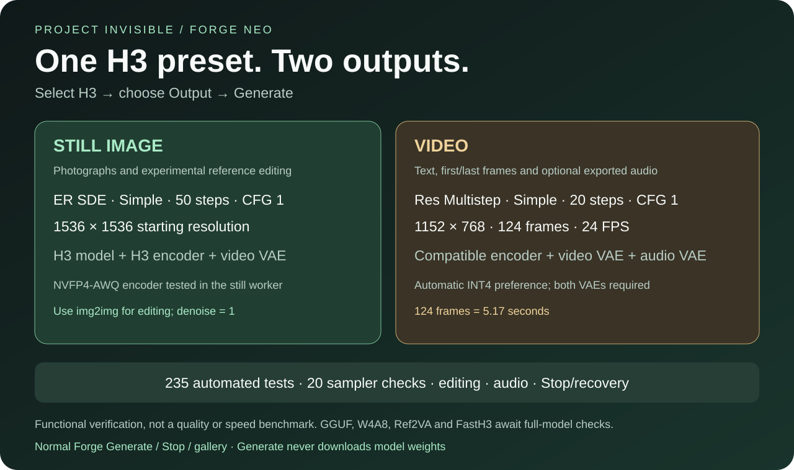
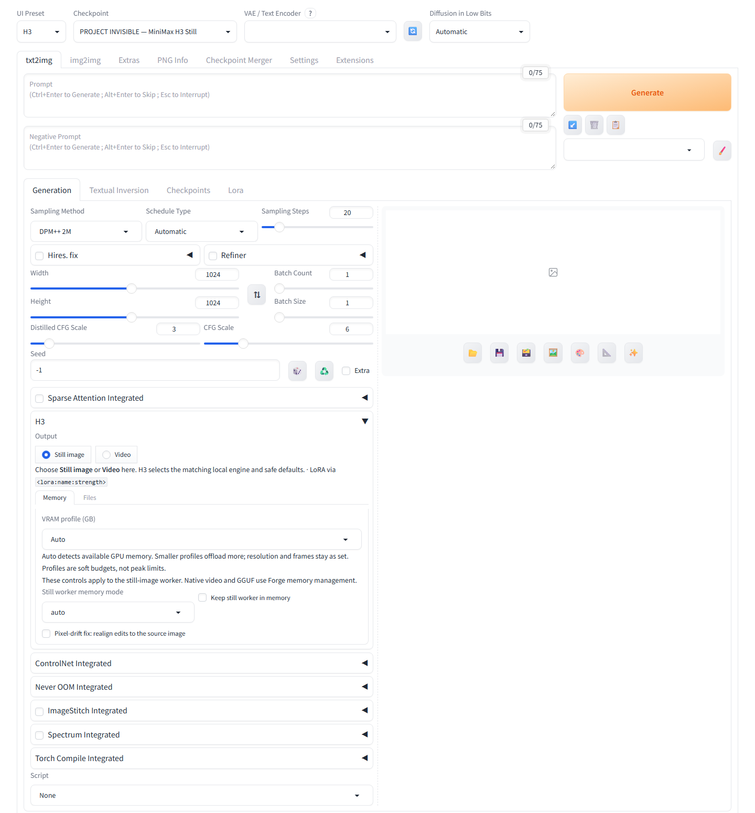
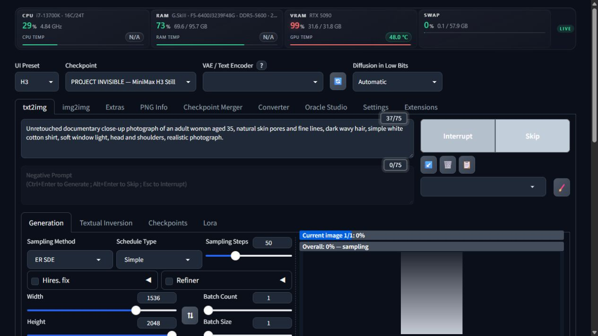
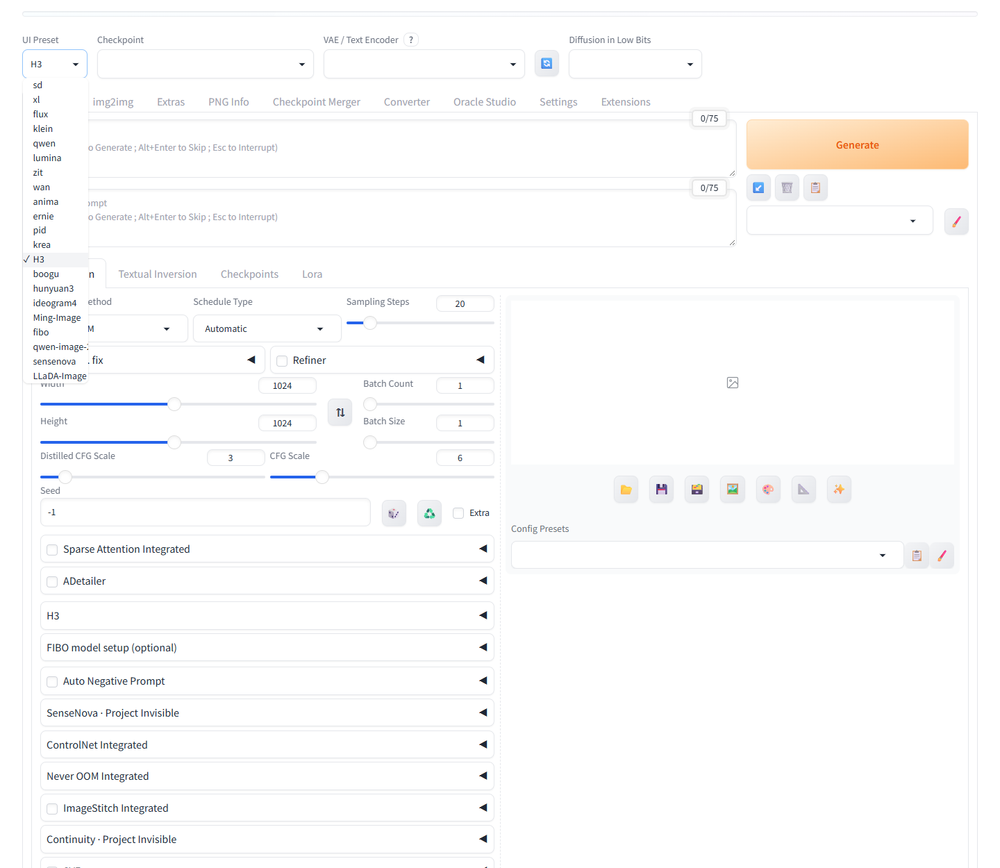
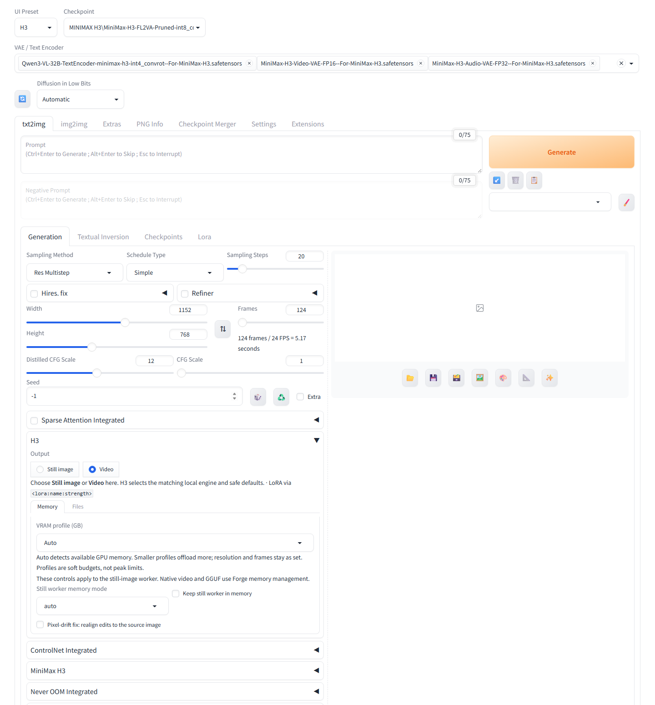
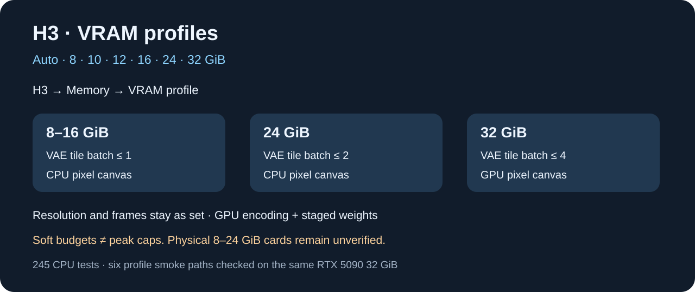

One H3 preset.
Still image or video.
Select H3 in UI Preset, choose the Output, then use Forge's normal Generate button. H3 selects the matching local engine while the familiar checkpoint, gallery and saving workflow remains in place.

Simple controls


Verified native runs
Local API runs used the physical FL2VA int8 ConvRot checkpoint with the approved Qwen3-VL-32B INT4 ConvRot encoder at 384 × 256, seed 62026.
2 steps · HTTP 200 · one image
4 steps · 22 frames · MP4 written
4 steps · 22 frames · MP4 written
These are small functional checks, not quality or speed benchmarks. The recorded request metadata confirms the INT4 encoder and requested audio state.
Unified live checks
The live UI contract reported exactly one H3 preset and both Output choices. Unified API requests passed Video with audio (46.17 s), silent Video (16.38 s), first-frame conditioning (31.53 s), last-frame conditioning (22.97 s), and combined first/last-frame conditioning (22.89 s).
The dedicated worker passed all 20 tested sampler/scheduler combinations after restart. The first cold check took 60.2 seconds; warm tiny-setting checks took 2.08–3.88 seconds.
Generated examples


Install in three steps
- Download and extract the extension into Forge's
extensionsfolder. - Restart Forge and select H3 under UI Preset.
- Choose Still image or Video, then Generate.
Model weights are downloaded separately. Generate never downloads weights. Generation runs locally.
Built around Forge
- Eduardo Abreu / minimax-h3-forge-neo — native video, audio, quantization and memory backend (AGPL-3.0)
- Native txt2img, img2img, Generate, Stop, gallery and saving.
- An isolated still worker that releases its memory.
- No additional tab, virtual environment or Forge core changes.
Tested, with clear limits
Current CPU suites pass 138 main tests and 107 imported native-backend tests, 245 total. A separate 75-test Boogu regression suite also passed after its installed refresh-snapshot fix. Full-model Ref2VA, GGUF, W4A8 and FastH3 remain unverified locally.
VRAM profiles

Profiles change weight residency and decode concurrency, preserving dimensions and sampling. They are soft budgets, not peak caps. All six native smoke paths passed on one 32 GiB GPU; physical smaller-card compatibility remains unverified.
Actual 768p video sample
RTX 5090: 335.82 seconds including loading; one VRAM observation was 26.16 GiB, not a measured peak. Plain LoRA preserves quantized inference; other adapter formats use a potentially slower compatibility path and remain unverified with full H3 GPU generation.
1152 × 768, 20 steps, 124 frames, INT4 encoder. One inspected H3 result; the old 4-step tiny clips were functional tests.
32 GiB profile quality regression
1152 x 768, 124 frames, 20 steps. Warm 239.30 s; maximum sampled total GPU usage 27.60 GiB. This cannot be compared directly with the previous cold runtime.
Special Thanks
- r/sdforall — community discussion and testing
- r/SECourses — community discussion and testing
- r/malcolmrey — community discussion and testing
- Haoming02 / sd-webui-forge-classic (neo branch) — the Forge Neo tree this extension targets
- ShootTheSound / Peter Neill and ComfyUI-Fizgig-H3-Still — H3 still-image latent and decoder implementation
- Adeliox — original Klein Head Swap
- Alissonerdx — BFS (Best Face Swap) workflow and LoRAs
- PozzettiAndrea / ComfyUI-SAM3 and Meta SAM3 — segmentation workflow inspiration across Project Invisible
- ComfyUI — H3 backend and upstream sampler/scheduler coverage
- The Forge / AUTOMATIC1111 community — for the extension ecosystem this plugs into
- Project Invisible extensions — memory policy, GPU compatibility and extension philosophy
Thank you to the wider Forge, Diffusers, Qwen, DeGrid and open-source communities. Head-swap, BFS and SAM3 credits acknowledge the wider ecosystem; those tools are not bundled H3 features.